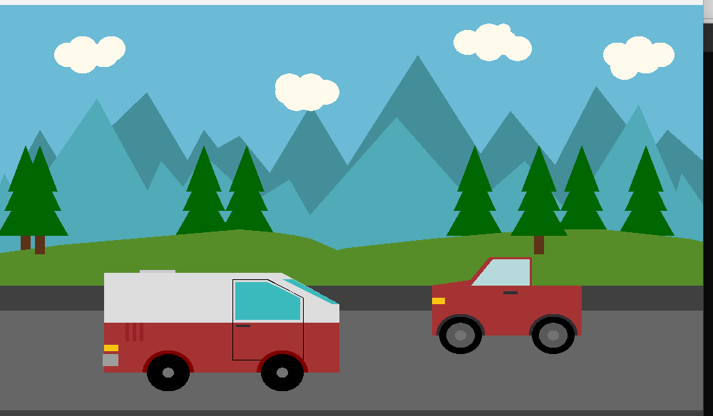

Home
Education
Experience
Projects
Contact Me
Courier Management System
Language:
Java
Description:
A desktop-based courier service system to manage parcel bookings, delivery tracking, and employee records.
Mobile Shop Management
Language:
C#
Description:
A shop inventory and sales management system that includes billing, stock updates, and reporting.

Urban to Rural (Graphics Project)
Language:
C++ (Computer Graphics with OpenGL)
Description:
Animated scene transition from an urban environment to a rural area using computer graphics techniques.
Crop Care
Subject:
Software Engineering
Description:
A farming assistant tool that provides crop disease detection, fertilizer suggestions, and seasonal tips to improve productivity.